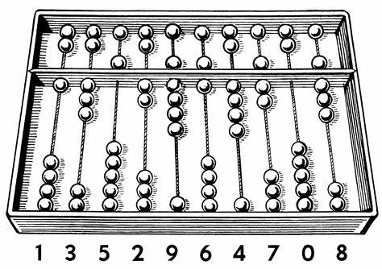
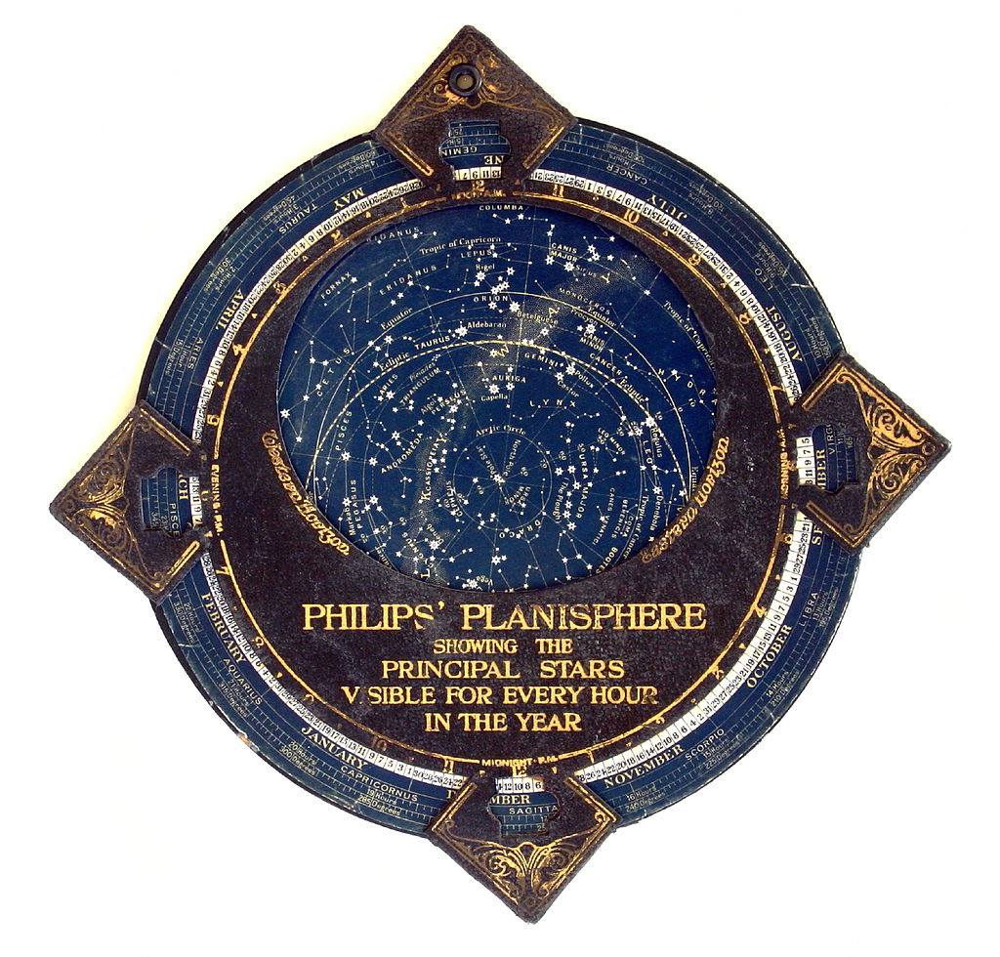

Computing Devices Throughout History
Before the digitization of computers, the early stages of computing consisted of using simple, analog tools to record quantities and aid calculation.
Tally sticks may have been the earliest form of a counting device - an example being a baboon's bone with 29 distinct notches dated around 44,000 years old. The early forms of an abacus began appearing in the earliest known civilization, Sumer, around 2700 BC. The abacus allowed for a two-dimensional representation of numbers in which arithmetic operations were possible, such as addition and subtraction. It continued to be used throughout later major civilizations from Ancient Egypt, to Medieval Europe.
As society sought to explore the world beyond their own regions, computing devices evolved to aid their astronomical and navigational pursuits.
The planisphere is a computing instrument in the form of two adjustable disks rotating on a pivot. It is used to chart the stars, displaying the visible stars in the sky for any time and date. The position of stars at the time were used by sailors for navigation, determining direction and position at sea.
Around the 17th century, astronomical calculations were becoming too long and tedious to calculate in a feasible amount of time. After the discovery of logarithms in 1614, enabling a significant simplification for tedious calculations back then. Mathematics has progressed from algebra, to more complex ideas such as logarithms and calculus. In order to accommodate the paradigm shift in mathematics, computing instruments too were needed to progress.
The Analytical Engine

After the discovery of the logarithm, Charles Babbage's analytical engine was conceived, seeking out to automate such tedious calculations to a pinpoint accuracy. Through mechanical assembly and steam power, It was to be capable of calculating not only basic arithmetic, but also algebraic, and transcendental (non-algebraic functions, e.g. logarithms/exponents) formulae such as \(a^x(y-z)^2\) .
The Analytical Engine consisted of:
- The mill; he calculating unit akin to a CPU
- The store; where data was stored in processing much like memory and storage
- The reader; taking punched cards in which instructions were entered into, allowing for programming, thus acting as the input device
- The printer; which served as the output device.
It was thus much more than a simple calculator of its time; capable of solving complex problems and programmability, much like modern computers. It was to be a general-purpose, programmable, automatic digital computer. Due to limiting technologies at the time, Babbage's vision was never fully realized. It however, played a significant role in serving as the basis of the modern computers to come. It was only in 1944 during World War II with the construction of the Harvard Mark I, that the idea of a general-purpose computer came to fruition. The Mark I involved technological advancements since Babbage's time, and was used to assist in complex calculations, much of which was in the context of military and scientific applications during World War II.
Throughout history, the evolution of computing instruments have been driven by society's changing needs, such as navigation, astronomy, mathematics and military use. Over time, it has continued to advance into nearly every sector of human endeavor. Today, there are not many fields left which computing has not explored, highlighting the seemingly unlimited potential of computing, and its transformative role in shaping our world.